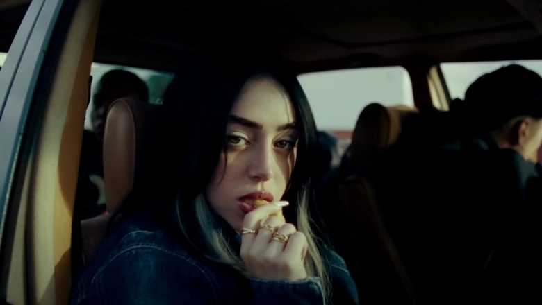

Bibliografia
Nicki Nicole es una talentosa cantante y rapera argentina que ha emergido como una de las figuras más prominentes en la escena del trap latinoamericano. Nacida como Nicole Denise Cucco el 23 de agosto de 2000 en Buenos Aires, Argentina, Nicki comenzó a incursionar en la música a una edad temprana, inspirada por diversos géneros y artistas urbanos.
Su ascenso al éxito comenzó con el lanzamiento de sencillos como "Wapo Traketero" y "Colocao", que rápidamente capturaron la atención del público y la crítica. En 2019, lanzó su álbum debut "Recuerdos", que incluía colaboraciones con artistas destacados como Duki y Bizarrap. Este álbum la consolidó como una de las principales exponentes del trap argentino, y le valió el reconocimiento de la industria y del público.
A lo largo de su carrera, Nicki Nicole ha sido galardonada con varios premios, incluidos los Premios Gardel y los Premios MTV MIAW, por su destacada contribución a la música urbana. Además, ha realizado giras exitosas por Argentina y otros países de América Latina, donde ha cautivado a audiencias con su energía en el escenario y su estilo distintivo.
En la actualidad, Nicki Nicole sigue siendo una fuerza creativa en la industria musical, lanzando nuevos sencillos y colaboraciones exitosas. Su música continúa resonando con una amplia audiencia, consolidándola como una de las principales artistas femeninas en el panorama del trap latinoamericano.
